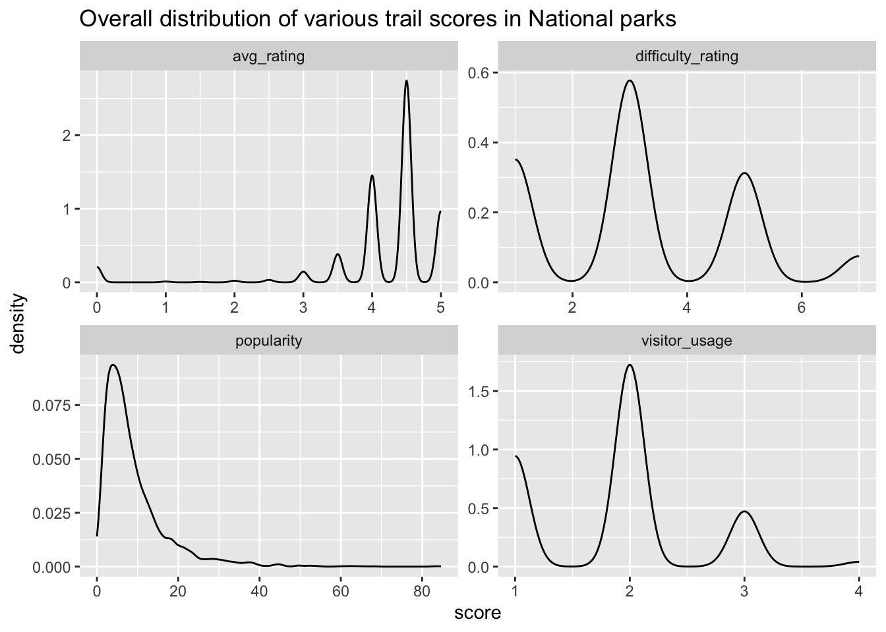
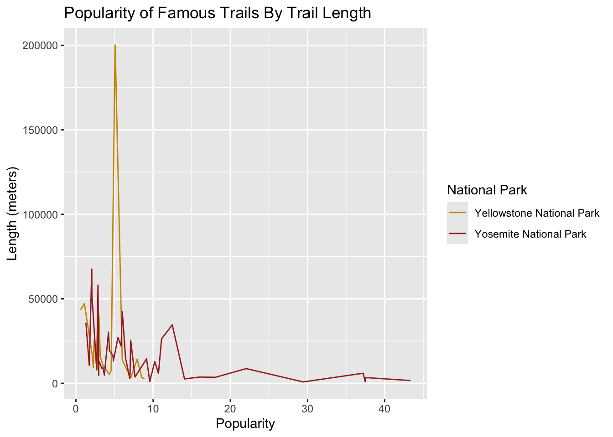
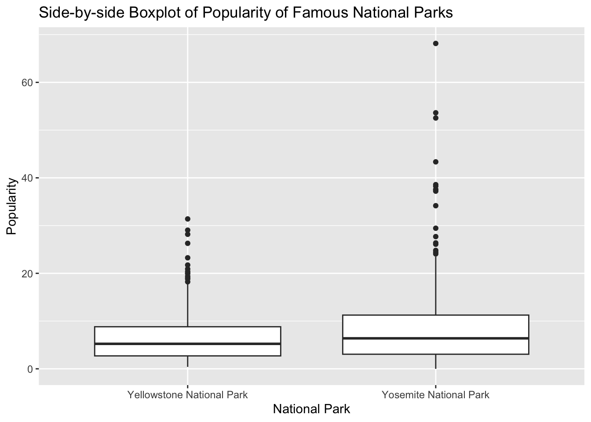

The dataset analyzed is the collection of all of the national parks in the United States, including the state in which each park is located, the date when it was established, its total area, the number of recreation visitors it receives each year, and a description of its key features.
Start Exploring
What is the length in miles of the fourth longest trail in California?
Consider an “easy” trail to be one that has an elevation gain of less than 500 meters, a distance of less than 5 kilometers, and a difficulty rating below 4.
Which California National Park has most “easy” trails?
np_trails_new %>%ggplot(aes(x=score)) +geom_density() +facet_wrap(~ measure, scales ='free') +ggtitle("Overall distribution of various trail scores in National parks")
Warning: Removed 253 rows containing non-finite outside the scale range
(`stat_density()`).

Write a functions to help recommend trails to a user.
The function will have as its input the dataset and the name of a National Park, and the following optional arguments:
## Q5 code - do not change except for the dataset namenational_park |>recommend_trails("Haleakala National Park", min_elev =1000, min_rating =4 )
name
1 Silversword Loop Via Halemau'u Trail
2 Keonehe'ehe'e Trail
3 Kaupo Trail
Functional Programming with map
Use your function to recommend me trails from nearby parks
I am looking for a trail that is:
1000-3000 meters of elevation (I like mountains, but not too big.)
Rated at least a 4.5 on average
A loop trail (I don’t like to retrace my steps)
Iterate over the following parks to recommend me trails: Yosemite, Joshua Tree, Death Valley, Pinnacles, Lassen, Sequoia, and King’s Canyon.
map_dfr(.x =c("Yosemite National Park","Joshua Tree National Park","Death Valley National Park","Pinnacles National Park","Lassen National Park","Sequoia National Park","King's Canyon National Park"),~recommend_trails(data = national_park,park_name = .x,min_elev =1000,max_elev =3000,min_rating =4.5,trl_type ="loop"))
name
1 El Capitan Loop
2 Hetch Hetchy Loop via Lake Vernon
3 Four Mile Trail to Panorama Trail Loop
4 Yosemite Grand Tour
5 Clouds Rest Loop
6 The Pohono Trail from Inspiration Point
7 Pohono Trail: Glacier Point to Dewey Point
8 Merced Lake Loop Trail
9 Happy Isles to Cloud's Rest Loop
10 The High Sierra Camp Loop Trail
11 Mirror Lake, Snow Creek, and Upper Yosemite Falls Loop
12 Clark Range Circuit
13 Merced Lake Trail
14 The Clark Range and Red Peak Pass Trail
15 Jack Main Canyon and Tilden Lake Trail
16 Buena Vista Crest Trail to Royal Arch Lake
17 Chilnualna Falls Extended Loop
18 Happy Isles, Vernall Falls, Half Dome, Tenaya Lake, and Mirror Lakes Loop
19 Buena Vista, Royal Arch, and Crescent Lakes Loop
20 Merced Lake to Half Dome Loop via John Muir, Pack and Cloud Rest Trails
21 Tuolome, Sunrise and Merced Lakes, and Vogelslang Loop
22 Taft Point via Four Mile Trail
23 Vogelsang Basin Loop via John Muir Trail
24 Tenaya Lake to Half Dome Loop
25 Cottonwood-Marble Canyon Loop
26 Mineral King to Little Five Lakes Trail
27 Mineral King: Black Rock Pass Loop
Research Question
Two of the most famous parks in the world are Yosemite and Yellowstone. We are interested in studying if one of the parks has “better” trails than the other. It is up to you to decide what the definition of “better” is that you will use.
Visualization
national_park |>filter(area_name %in%c("Yosemite National Park", "Yellowstone National Park"), avg_rating >3, !str_detect(features, "'dogs-no'"))|>ggplot(aes(x=popularity, y=length, color=area_name))+geom_line()+labs(x ="Popularity", y="Length (meters)", title ="Popularity of Famous Trails By Trail Length", color="National Park")+scale_color_manual(values =c("Yosemite National Park"="brown", "Yellowstone National Park"="#CD9600"))

After comparing Yosemite and Yellowstone National Parks, we conclude that Yosemite National Park is better because the parks that have a high average rating while allowing dogs have a low popularity (less crowded) and variety of trail lengths compared to Yellowstone National Parks.
Statistical Analysis
Preforming a statistical analysis to address the research question using Welch Two Sample t-test.
park_data <- national_park %>%filter(area_name %in%c("Yosemite National Park", "Yellowstone National Park"))
# Q9 statistical model codebetter_park <- national_park |>filter(area_name %in%c("Yosemite National Park", "Yellowstone National Park"))|>select(area_name, avg_rating, popularity)t_test_rating_result <-t.test(avg_rating ~ area_name, data = better_park)t_test_popularity_result <-t.test(popularity ~ area_name, data = better_park)print(t_test_rating_result)
Welch Two Sample t-test
data: avg_rating by area_name
t = -0.51519, df = 461.39, p-value = 0.6067
alternative hypothesis: true difference in means between group Yellowstone National Park and group Yosemite National Park is not equal to 0
95 percent confidence interval:
-0.2977996 0.1740864
sample estimates:
mean in group Yellowstone National Park mean in group Yosemite National Park
4.002193 4.064050
print(t_test_popularity_result)
Welch Two Sample t-test
data: popularity by area_name
t = -3.0583, df = 401.26, p-value = 0.002375
alternative hypothesis: true difference in means between group Yellowstone National Park and group Yosemite National Park is not equal to 0
95 percent confidence interval:
-3.6614668 -0.7961367
sample estimates:
mean in group Yellowstone National Park mean in group Yosemite National Park
7.006884 9.235686
better_park|>ggplot(aes(x=area_name, y=popularity)) +geom_boxplot() +ylab("Popularity") +xlab("National Park") +labs(title="Side-by-side Boxplot of Popularity of Famous National Parks")

Based on the statistical evidence found in the t-test comparing Yellow Stone National Park and Yosemite National Park, we found that when it comes to average rating there was no statistically significant difference between the parks but when it comes to popularity Yosemite had a statistically significant average of 9.235 compared to 7.001 making it the better National Park.